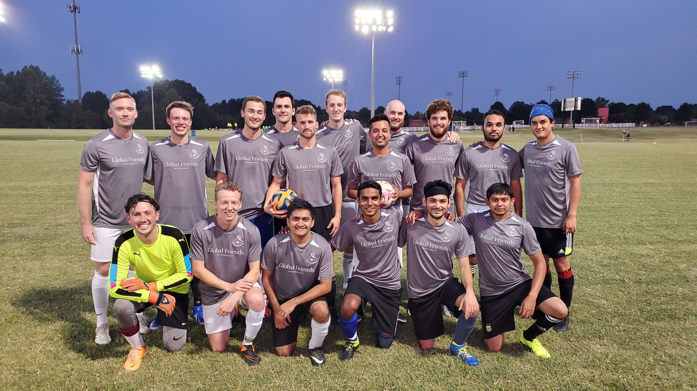
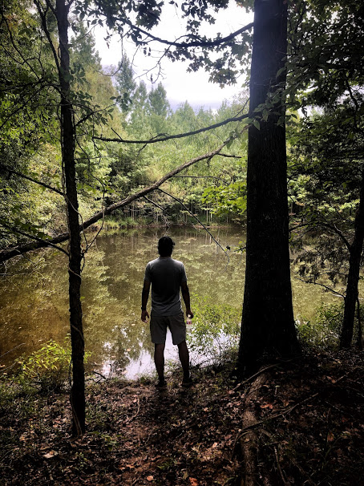
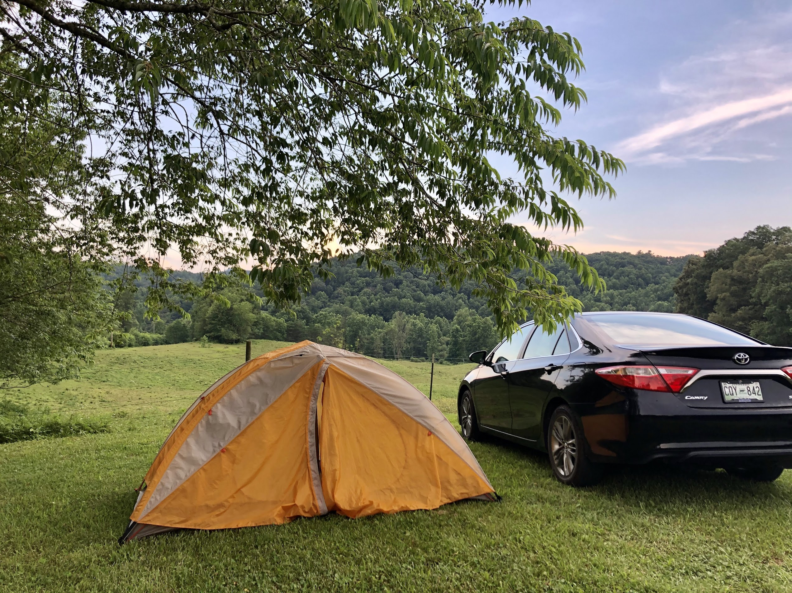
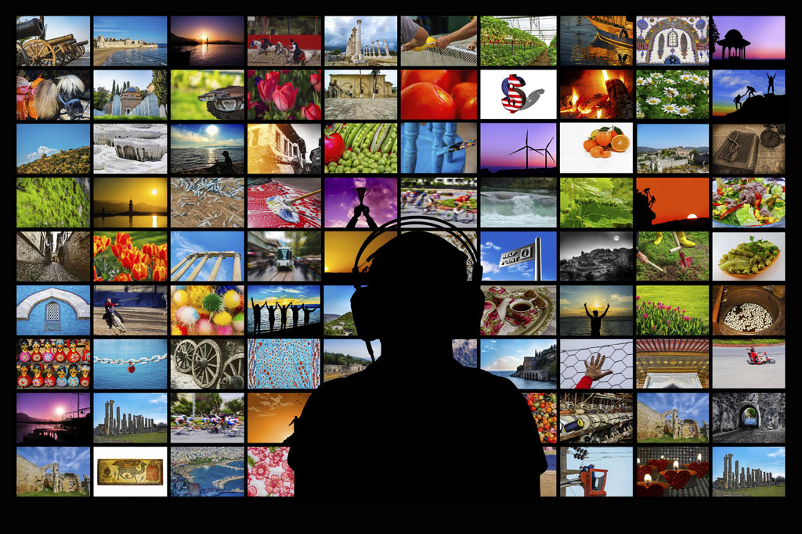
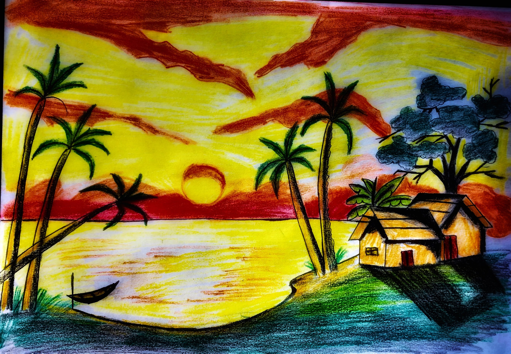

Active Life
Sports
Football, table tennis, volleyball, and cricket keep me active, competitive, and engaged.
A glimpse into the activities that keep me grounded, energized, and creatively engaged beyond research— from sports and outdoor adventures to books, documentaries, and drawing.

Football, table tennis, volleyball, and cricket keep me active, competitive, and engaged.

Exploring scenic trails helps me disconnect from routine and reconnect with nature.

Sleeping under the stars and embracing the outdoors is an experience I deeply enjoy.

Documentaries broaden my perspective by exposing me to history, cultures, and global issues.
Books open new worlds, deepen my knowledge, and often inspire new ways of thinking.

Drawing gives me a creative outlet to express ideas, emotions, and visual imagination.